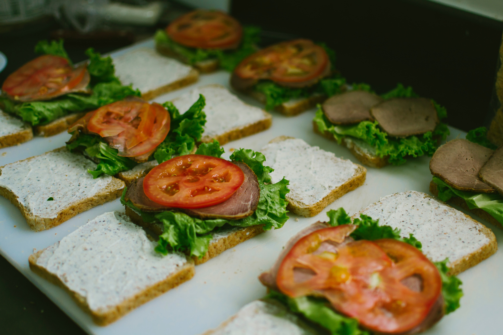

Tomato Sandwiches

Growing up, we did not have a lot of money.
What we did have was a garden, and that garden produced so many tomatoes we hardly knew what to do with them.
A lot of them ended up in these sandwiches.
Ingredients
- 6 slices of bread
- 1 beefsteak tomato
- 1 bunch of basil
- mayonaise to taste
- salt to taste
- pepper to taste
Steps
- Toast the bread until light golden brown and spread with mayo.
Add a few leaves of basil.
- Slice the tomatoes to desired thickness and lay on the bread.
- Add salt and pepper on top of the tomato side of the sandwich.
- If desired, cheese, bacon, or various other lunch meats can be added. Enjoy.